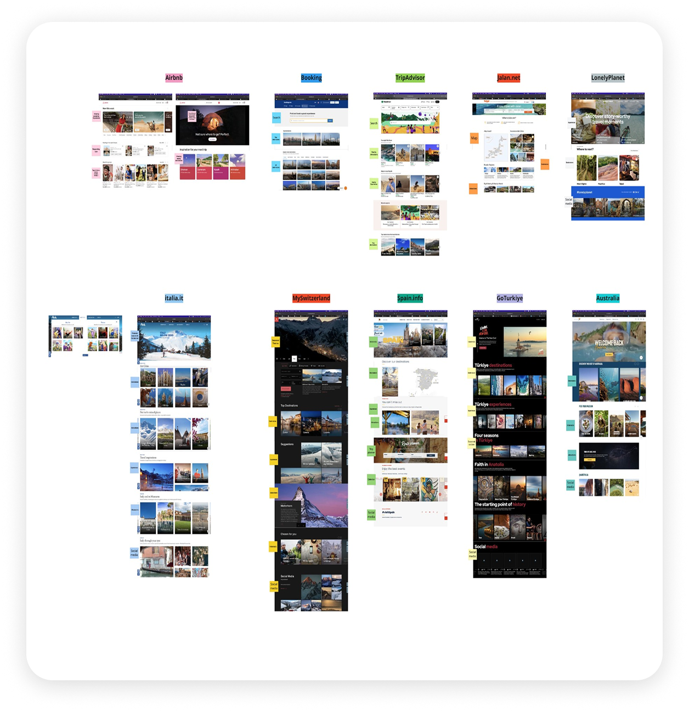
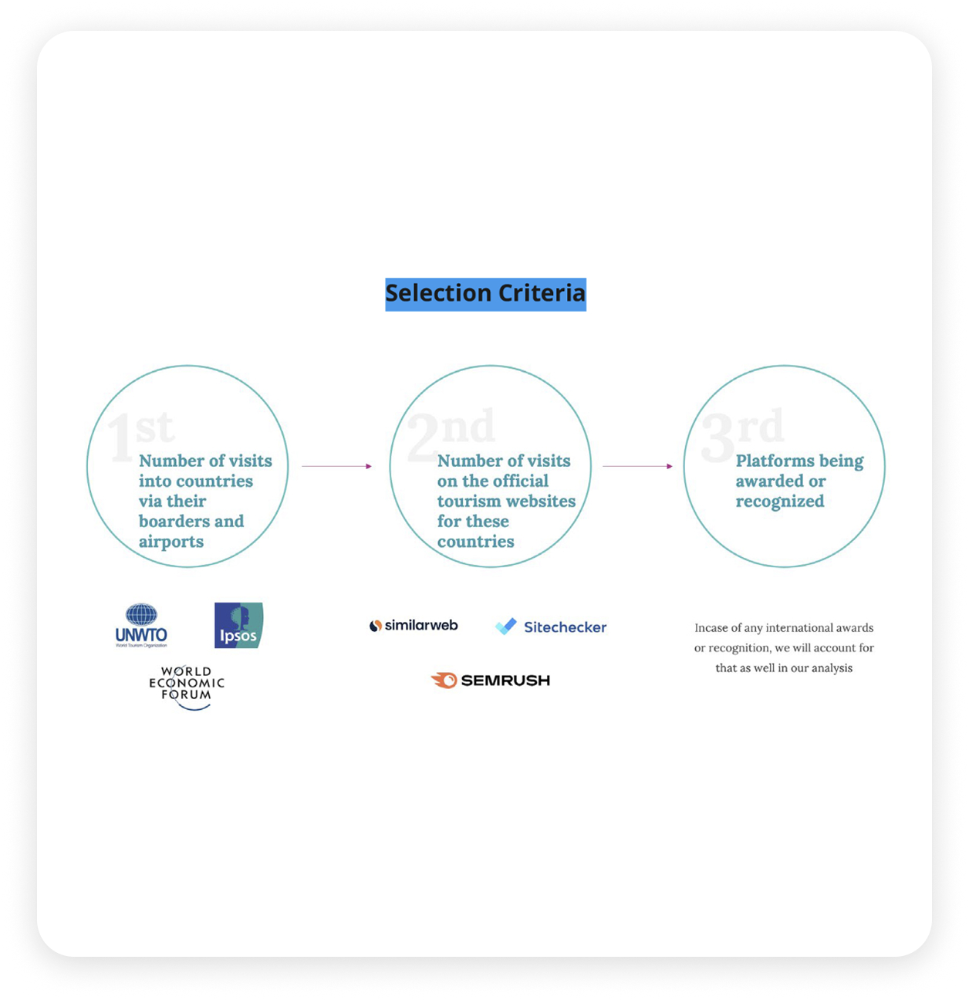
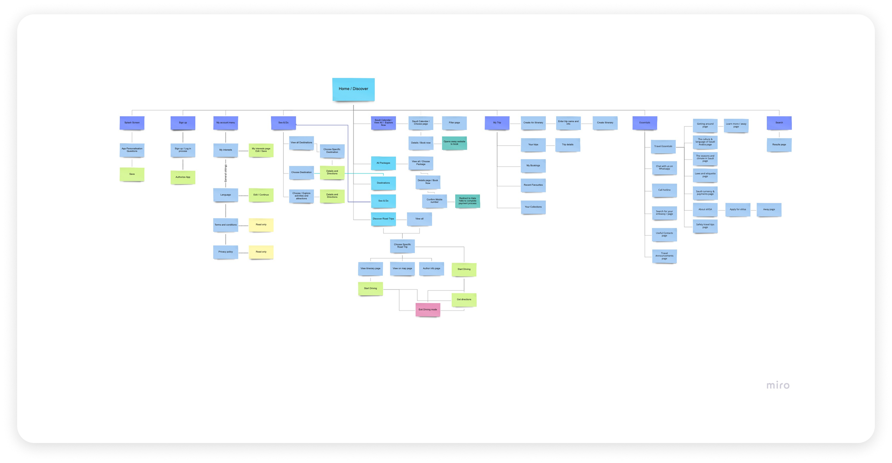
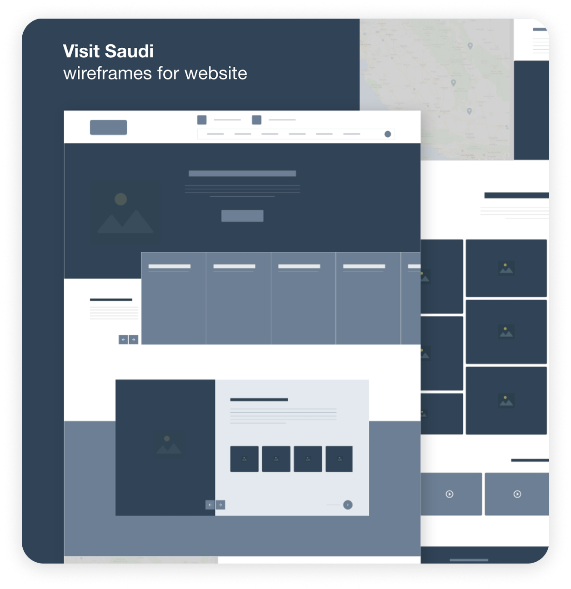
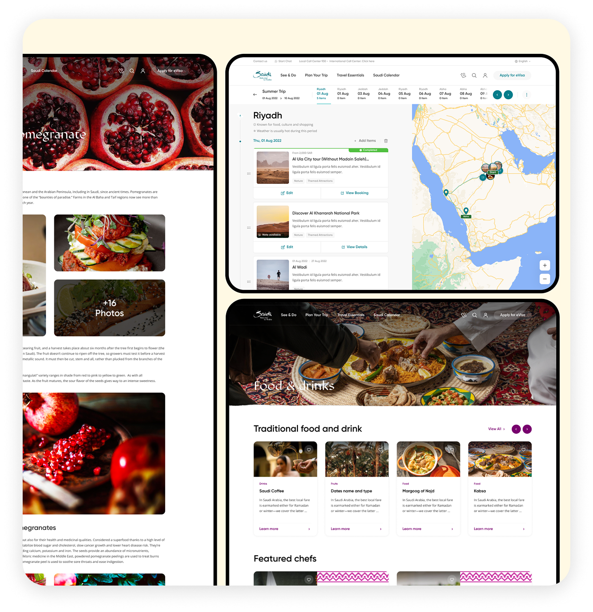
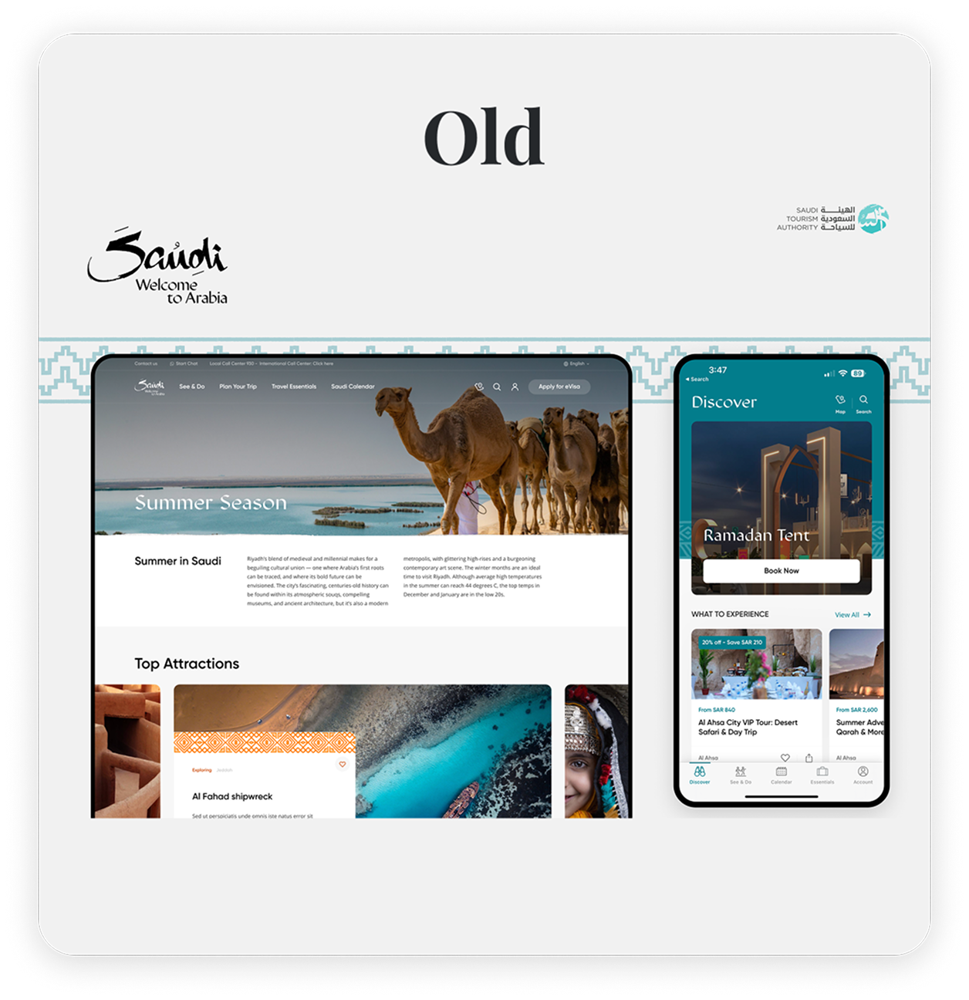
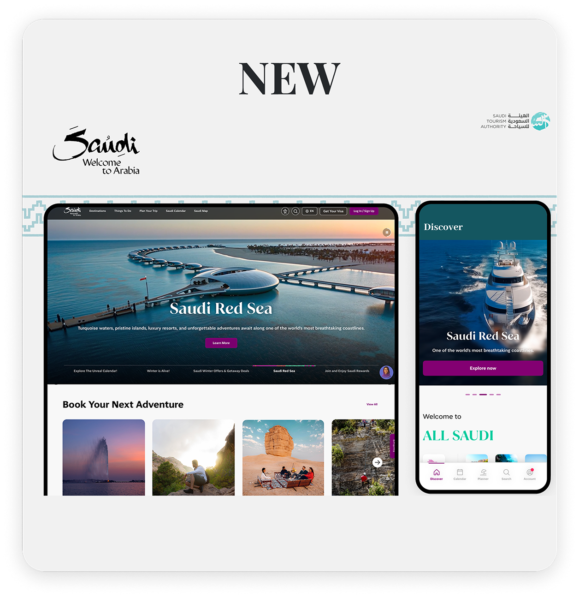

Transforming Saudi Arabia's
Digital Tourism Experience
Visit Saudi is the official platform promoting Saudi Arabia as a top tourist destination. The goal of the redesign was to create a seamless, engaging, and accessible experience for both web and mobile users — helping visitors explore the kingdom, plan trips, and engage with local attractions effortlessly.
Research revealed critical issues: a confusing onboarding flow, difficulty finding relevant attractions, limited personalization, inconsistent journeys across web and mobile, and navigation friction caused by complex information structures.
Phase 01We began by understanding user needs through extensive research: benchmarking competitors, conducting user testing, sending surveys, and tracking user behavior with Hotjar. Insights revealed pain points such as a confusing onboarding process, difficulty finding relevant information, and a desire for more personalized content. These findings became the foundation for every design decision we made.


Next, we focused on building a clear and intuitive structure. By mapping user journeys and developing a comprehensive sitemap, we ensured that visitors could easily navigate the platform, discover attractions, and plan their trips without friction. Every screen and interaction was designed to guide users toward their goals efficiently.

The design phase involved creating wireframes, high-fidelity mockups, interactive prototypes, and a robust design system from scratch. The system included a consistent color palette, typography, iconography, and reusable UI components — ensuring a cohesive visual language across web and mobile. Multiple rounds of user testing helped refine the flows, validate design decisions, and optimize usability and accessibility.


After launch, the revamp demonstrated clear improvements in UX performance. User stickiness increased as visitors spent more time exploring content and returning to plan their trips. Navigation success rates improved and friction points identified during research were noticeably reduced.

